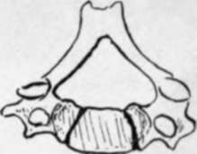

Lumbar Vertebra. Part 3
Description
This section is from the book "The Anatomy Of The Human Skeleton", by J. Ernest Frazer. Also available from Amazon: The anatomy of the human skeleton.
Lumbar Vertebra. Part 3
Ossification Of Vertebrab
The vertebrae are preformed in cartilage, the cartilaginous structure showing a centrum and two separate halves of a neural arch, with the various processes represented at first only in concentrated mesenchyme into which the chondrifying process extends later.
Ossification begins during the seventh week by the formation of three primary centres, one for the centrum and one for each half of the neural arch. The centre for the centrum is probably double in origin, fusing rapidly into one.
The primary centres appear at different times in different regions : thus those for the arches appear first in the cervical region (Axis) and succeed one another from above downwards, while the centrum ossifies earhest in the lower dorsal region and " spreads " from thence in both directions. So the cervical arches can be said to ossify before their centra, while the reverse is the case in the lumbar and lower dorsal regions : there appears to be considerable individual variation in the rapidity of the successive appearances of centres, but it may be said that by the end of the third month there are primary centres in all the true vertebrae.
At birth the corresponding primary bony parts are distinct, but joined by cartilage. The neural halves join dorsally during the first year or so, fusion commencing in the lumbar region, and a few years later the neural arches effect junction with the bodies, the process commencing in the dorsal vertebrae.
After puberty secondary centres appear and fuse with the primary bone by the age of twenty-one. These centres occur in the cartilage covering the upper and lower surfaces of the body (epiphysial plates) and the tips of the transverse and spinous processes. The epiphyses on the body only ossify the periphery of the cartilaginous plate, the central part remaining cartilaginous, but in advanced life this also may become ossified.
The account just given applies to a typical vertebra such as the human dorsal segment. Highly-modified vertebrae, as the first two cervical, show corresponding modifications in ossifications, but even the slighter differences in other bones introduce certain extra centres. Thus in the cervical region the bifid spines have double epiphyses, while the costal processes of the seventh and occasionally of the sixth (and even the fourth) have separate centres of ossification, instead of becoming ossified by extension from the neural arch and transverse process, as in the higher vertebra. In the lumbar region the mammillary processes have separate centres (like the twelfth dorsal), and there is said to be an occasional " costal " centre in the transverse process of the first lumbar, and occasional double centres for each half of the neural arch in the fifth lumbar (and very rarely in others).
Of such double centres one forms the pedicle, upper articular and transverse process, and the other forms the lower articular process and lamina : occasionally a suture persists in the adult, passing obliquely between these two portions.
The Axis has the ordinary primary centres plus those of the body of the Atlas (odontoid process). It also has the corresponding secondary centres, with the exception, perhaps, of those for intervening discs between its body and odontoid : the disc on the upper surface of the odontoid is represented by an apical epiphysis. At birth the bony parts are four, with wide tracts of cartilage intervening, and it does not become consolidated before six years of age : the four pieces are-(i) centrum ; (2) odontoid and top of body ; (3) and (4) two halves of neural arch. The odontoid portion unites first with the others, about three, and the remainder join each other between the ages of four and six.
The odontoid ossification includes the top of the body and the inner part of the upper articular processes.
The Atlas has the usual two centres for the neural arch, from which it and the greater part of the lateral masses are formed bilaterally. At birth these halves are separate, and are only joined in front by fibrous and cartilaginous tissue of the anterior arch. This begins to ossify in the first year from one central or two lateral centres, there appearing to be great individual variation in this matter : the front part of the lateral mass and upper articular surface is formed in this ossification.
The neural halves join dorsally about the fourth year, and with the anterior arch usually between the fifth and ninth years, but the consolidation of the bone may be incomplete in some cases even at puberty.
Secondary epiphyses have been described for the tip of the transverse process, and occasionally for the posterior and even for the anterior tubercle.
The vertebras are intersegmental in position-that is, they aie to be considered as situated morphologically opposite the " septum " between two neighbouring segments • of the body wall. This is brought about by a secondary division into anterior and posterior parts of the mesoderm of each primitive segment as it begins to spread inwards round the notochord. The posterior half of one segment joins with the anterior part of the next segment on its caudal side, and the chon-drification that makes the rudiment of the vertebra takes place in the composite mass thus produced ; it contains, therefore, mesodermal tissue from two segments, so is situated opposite the intersegmental line, and its neural arch and processes, costal, transverse, and spinous, are all situated in the intersegmental plane.
*The term segment is now being used, not in the descriptive sense in which it has hitherto been employed but in its stricter morphological sense, implying the theoretically fundamental and serially homologous foundation of the body wall, indicated in the embryo by the primitive segmentations of paraxial mesoderm and its extension into the wall, with its " segmental " nerve and vessels.
Fig. 30.-Cervical vertebra from a child to show how much the neural arch is concerned in this region in the formation of the " body." C. is the proper centrum.
The ingrowing cells (sclerotome) of the primitive segments form a sheath for the notochord, representing the membranous stage in the phylogenetic development of the column ; later chon-drification takes place here, and later still ossification. The intervertebral discs are remains of the cartilaginous structure, and the anterior arch of the Atlas is looked on as a persisting and ossified hypochordal bar, which is the cartilaginous portion ventral to the sheath of the notochord in the intervertebral regions, disappearing in the other parts of the column.
The notochord is destroyed in the vertebrae by the formation of the bones, but persists in the nucleus pulposus of the intervertebral discs.
Continue to: